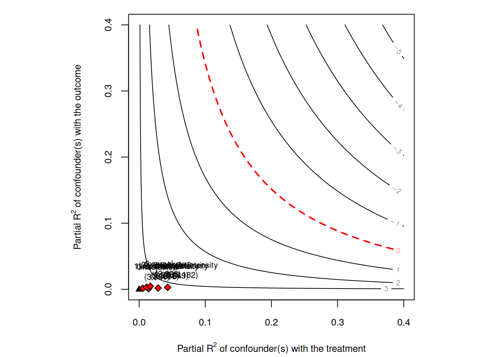

5 Sensitivity Analysis
The previous chapters often treat identification as yes or no. Applied work is usually less clean. We may believe the adjustment set is good, but still worry about some remaining confounding. Sensitivity analysis asks a practical question: how strong would unmeasured confounding have to be to change the conclusion?
Related reading: An extended treatment of the Cinelli-Hazlett robustness value and benchmark interpretations appears in the companion blog chapter on sensitivity analysis of Topics on Econometrics and Causal Inference.
Here I use four methods:
- Cinelli-Hazlett (2020) omitted-variable bias bounds — for OLS regression estimates, quantifies how strong an omitted variable would need to be (in terms of partial \(R^2\) with treatment and outcome) to bring the estimate to zero.
- E-values (VanderWeele-Ding 2017) — for risk ratios, the minimum strength of association (on the risk-ratio scale) that an unmeasured confounder would need with both treatment and outcome to fully explain the observed association.
- Rosenbaum bounds — for matched estimators, the magnitude of non-random treatment assignment within matched pairs that would render the test result insignificant.
- The marginal sensitivity model (Tan 2006; Zhao, Small and Bhattacharya 2019; Dorn and Guo 2023) — for weighting estimators, the factor by which an unmeasured confounder may move each unit’s odds of treatment before the confidence interval for the ATE includes zero.
5.1 The NHEFS smoking-cessation example
We use the National Health and Nutrition Examination Survey I Epidemiologic Follow-up Study (NHEFS) data — the same dataset used in the applied DAG-workflow chapter. The question: what is the effect of quitting smoking (qsmk) on weight gain over 10 years (wt82_71)? We start from the raw comparison.
Code
n = 1566Treated (quit smoking) = 403Mean weight gain (treated): 4.53 kgMean weight gain (untreated): 1.98 kgOf the 1,566 complete cases, 403 quit. Quitters gained 4.53 kg on average and continuing smokers 1.98 kg, a naive difference of 2.55 kg. But quitters and continuers differ on many baseline characteristics. We adjust for the standard set by OLS — sex, age, race, education, smoking intensity, years smoked, exercise, activity and baseline weight — and print the first three coefficients along with the treatment estimate. These are the nine covariates of the smoking cessation chapter with two differences in coding. Education enters as the five-category factor education, where that chapter used years of schooling, school, and the categorical variables enter as factors, not as numbers. So the estimates here are not directly comparable with the AIPW estimate of 3.29 kg there; part of any difference comes from the specification, not the estimator.
Code
| term | estimate | std.error | statistic | p.value |
|---|---|---|---|---|
| (Intercept) | 16.090 | 1.508 | 10.673 | 0.000 |
| qsmk | 3.381 | 0.441 | 7.665 | 0.000 |
| sex1 | -1.429 | 0.456 | -3.131 | 0.002 |
Code
Adjusted ACE estimate: 3.381 kg (SE = 0.441)The adjusted estimate is 3.381 kg with a standard error of 0.441, larger than the naive 2.55 kg. Adjustment moved the answer away from zero, not toward it. But the identification assumption requires that we have controlled for all relevant confounders. What if we missed one — say, a propensity to gain weight that also correlates with quitting decisions? Sensitivity analysis addresses this directly.
5.2 Cinelli-Hazlett OVB bounds
The framework is Cinelli and Hazlett (2020).
sensemakr implements the Cinelli-Hazlett (2020) approach. The key inputs are:
- a fitted regression
- the treatment variable name
- one or more benchmark covariates whose strength serves as a reference for how strong a hypothetical unobserved confounder might be
Code
Sensitivity Analysis to Unobserved Confounding
Model Formula: wt82_71 ~ qsmk + sex + age + race + education + smokeintensity +
smokeyrs + exercise + active + wt71
Null hypothesis: q = 1 and reduce = TRUE
-- This means we are considering biases that reduce the absolute value of the current estimate.
-- The null hypothesis deemed problematic is H0:tau = 0
Unadjusted Estimates of 'qsmk':
Coef. estimate: 3.3812
Standard Error: 0.4411
t-value (H0:tau = 0): 7.6649
Sensitivity Statistics:
Partial R2 of treatment with outcome: 0.0365
Robustness Value, q = 1: 0.1767
Robustness Value, q = 1, alpha = 0.05: 0.1347
Verbal interpretation of sensitivity statistics:
-- Partial R2 of the treatment with the outcome: an extreme confounder (orthogonal to the covariates) that explains 100% of the residual variance of the outcome, would need to explain at least 3.65% of the residual variance of the treatment to fully account for the observed estimated effect.
-- Robustness Value, q = 1: unobserved confounders (orthogonal to the covariates) that explain more than 17.67% of the residual variance of both the treatment and the outcome are strong enough to bring the point estimate to 0 (a bias of 100% of the original estimate). Conversely, unobserved confounders that do not explain more than 17.67% of the residual variance of both the treatment and the outcome are not strong enough to bring the point estimate to 0.
-- Robustness Value, q = 1, alpha = 0.05: unobserved confounders (orthogonal to the covariates) that explain more than 13.47% of the residual variance of both the treatment and the outcome are strong enough to bring the estimate to a range where it is no longer 'statistically different' from 0 (a bias of 100% of the original estimate), at the significance level of alpha = 0.05. Conversely, unobserved confounders that do not explain more than 13.47% of the residual variance of both the treatment and the outcome are not strong enough to bring the estimate to a range where it is no longer 'statistically different' from 0, at the significance level of alpha = 0.05.
Bounds on omitted variable bias:
--The table below shows the maximum strength of unobserved confounders with association with the treatment and the outcome bounded by a multiple of the observed explanatory power of the chosen benchmark covariate(s).
Bound Label R2dz.x R2yz.dx Treatment Adjusted Estimate Adjusted Se
1x smokeintensity 0.0143 0.0010 qsmk 3.3157 0.4442
2x smokeintensity 0.0287 0.0020 qsmk 3.2492 0.4473
3x smokeintensity 0.0430 0.0029 qsmk 3.1817 0.4504
1x smokeyrs 0.0056 0.0015 qsmk 3.3299 0.4422
2x smokeyrs 0.0112 0.0031 qsmk 3.2783 0.4431
3x smokeyrs 0.0168 0.0046 qsmk 3.2264 0.4440
Adjusted T Adjusted Lower CI Adjusted Upper CI
7.4636 2.4443 4.1871
7.2641 2.3718 4.1266
7.0640 2.2982 4.0652
7.5308 2.4626 4.1972
7.3989 2.4092 4.1474
7.2667 2.3555 4.0973The summary tells us:
- Robustness value (RV): the minimum strength of association (in terms of partial \(R^2\)) that an unmeasured confounder would need with both the treatment and the outcome to reduce the estimate to zero. Higher = more robust.
- RV_q: the strength needed to “explain away” a fraction \(q\) of the estimate (here \(q = 1\) means complete explanation).
- Benchmark comparisons: how the RV compares to multiples of the observed covariates.
For this regression the partial \(R^2\) of quitting with weight change is 3.65%. The robustness value at \(q=1\) is 17.67%. A confounder that explains 17.67% of the residual variance of both quitting and weight change, after the measured covariates, brings the estimate to zero; one that explains less than that of both cannot. It is an equal-strength threshold. A confounder can still explain the estimate away with one partial \(R^2\) below 17.67% if the other is large enough, because the bias depends on their product. To leave it merely statistically indistinguishable from zero at the 5% level, 13.47% would be enough.
The benchmark rows put those numbers on a scale. Smoking intensity explains 1.43% of the residual variance of quitting and 0.10% of the residual variance of weight change. A confounder three times as strong on both margins would move the estimate from 3.381 to 3.182, with a 95% interval of \([2.30, 4.07]\). None of the measured covariates comes near 17.67% on either margin, and the bounds built from them leave the estimate well above zero, so the estimate is robust to a confounder resembling the ones we already control for.
The same information is easier to read as a contour plot. The horizontal axis is the confounder’s partial \(R^2\) with the treatment, the vertical axis its partial \(R^2\) with the outcome, and the contours give the adjusted estimate at each combination. The benchmark diamonds mark 1x, 2x and 3x smoking intensity and years smoked. All six sit very close to the origin, so we cut the axes at 0.06 and 0.006 to keep their labels apart; the robustness value of 0.177 that would drive the estimate to zero is far outside this window.
Code
plot(sens, lim = 0.06, lim.y = 0.006, cex.label.text = 0.6)
All six benchmark points sit below 0.05 on the treatment axis and below 0.005 on the outcome axis, in the region where the adjusted estimate stays above 3 kg. The contour that reaches zero is a long way out.
5.3 E-values for risk ratios
The E-value is VanderWeele and Ding (2017).
For binary outcomes and risk-ratio-type estimands, VanderWeele and Ding (2017) propose the E-value: the minimum strength of association on the risk-ratio scale that an unmeasured confounder would need to have with both the treatment and the outcome to fully explain the observed risk ratio.
To illustrate, we dichotomize weight change into any gain versus none, fit the risk ratio by Poisson regression with a log link (Zou 2004) on the same covariates, and take the confidence interval from robust standard errors:
Code
nhefs$gain <- as.numeric(nhefs$wt82_71 > 0)
rr_fit <- glm(gain ~ qsmk + sex + age + race + education + smokeintensity +
smokeyrs + exercise + active + wt71,
data = nhefs, family = poisson(link = "log"))
rr_summary <- tidy(rr_fit, exp = TRUE, conf.int = TRUE)
rr_est <- exp(coef(rr_fit)["qsmk"])
# The Poisson likelihood is misspecified for a binary outcome (the Zou 2004
# log-binomial-via-Poisson trick), so the model-based variance is wrong.
# Use robust (sandwich/HC) standard errors for the RR confidence interval.
rr_ci <- lmtest::coefci(rr_fit, parm = "qsmk",
vcov. = sandwich::vcovHC(rr_fit, type = "HC0"))
rr_lo <- exp(rr_ci[1])
rr_hi <- exp(rr_ci[2])
cat(sprintf("Adjusted RR (quit vs not): %.3f [%.3f, %.3f]\n",
rr_est, rr_lo, rr_hi))Adjusted RR (quit vs not): 1.218 [1.135, 1.307]Code
ev <- evalues.RR(est = rr_est, lo = rr_lo, hi = rr_hi)
print(ev) point lower upper
RR 1.217702 1.134911 1.306534
E-values 1.732578 1.526206 NAThe E-value reports two numbers:
- E-value (point estimate): an unmeasured confounder associated with both treatment and outcome by risk ratios of this value, above and beyond the measured confounders, could fully explain away the observed effect; one weaker than this on both could not. Like the RV, it is an equal-strength threshold, and a confounder stronger on one association can be weaker on the other.
- E-value (confidence interval): the minimum strength needed to shift the lower confidence bound to 1.
The adjusted risk ratio is 1.218, with a 95% interval of \([1.135, 1.307]\). Quitters are about 22% more likely to gain any weight. The E-value for the point estimate is 1.73: an unmeasured confounder with risk-ratio associations of 1.73 with both quitting and weight gain, beyond the nine measured covariates, could account for the whole association, and one below 1.73 on both could not. The E-value for the confidence limit is 1.53, the strength that would push the lower bound to 1.
An E-value much greater than 1 suggests the result is hard to explain by unmeasured confounding. An E-value close to 1 means a modest unmeasured confounder could overturn the conclusion. At 1.73 this result sits in between: a confounder as strong as that is not implausible, but it would have to be unrelated to everything already in the model.
The useful part of the E-value is that it is on the risk-ratio scale. It can be explained without specifying a model for the unobserved confounder.
5.4 Rosenbaum bounds (matched estimators)
The sensitivity model and the bound computed below are Rosenbaum’s (2002).
For matching estimators, Rosenbaum bounds (Rosenbaum 2002) provide a sensitivity analysis based on the maximum deviation from random assignment within matched pairs.
Suppose units in a matched pair are observationally identical, but one might still be more likely than the other to receive treatment due to unobserved factors. Let \(\Gamma\) bound the ratio of treatment odds between the two units of a pair: \(\Gamma = 1\) means matched pairs are perfectly randomised (both units equally likely to be the treated one); \(\Gamma = 2\) means hidden bias could make one unit’s odds of treatment up to twice the other’s. Formally, let units \(i\) and \(j\) share the same observed covariates and let \(\pi_i\) and \(\pi_j\) be their probabilities of treatment given everything that affects treatment, observed or not. The model assumes
\[ \frac{1}{\Gamma} \le \frac{\pi_i (1-\pi_j)}{\pi_j (1-\pi_i)} \le \Gamma \tag{5.1}\]
(Rosenbaum 1987; Rosenbaum 2002, ch. 4).
Rosenbaum bounds compute the range of \(p\)-values for the matched test under each value of \(\Gamma\). The critical \(\Gamma\) is the smallest value at which the test becomes insignificant.
Here is a worked example on the same NHEFS data. We fit the propensity score by logistic regression on the nine baseline covariates, match each of the 403 quitters to its nearest unmatched control on that score, take the paired differences in weight change, and compute the upper-bound Wilcoxon signed-rank \(p\)-value on a grid \(\Gamma \in [1, 4]\) in steps of 0.25:
Code
# Estimate propensity score
ps_fit <- glm(qsmk ~ sex + age + race + education + smokeintensity +
smokeyrs + exercise + active + wt71,
data = nhefs, family = binomial)
nhefs$ps <- predict(ps_fit, type = "response")
# Simple greedy 1:1 nearest-neighbour matching on the propensity score, without
# replacement. Nothing here is random, but the result depends on row order:
# treated units are matched in data order, and each takes its control out of the
# pool, so later units get worse matches. MatchIt's greedy nearest-neighbour
# matching has the same dependence; it only makes the order an explicit choice
# (m.order) along with tie handling. Check balance and match distances either way.
treated_idx <- which(nhefs$qsmk == 1)
control_idx <- which(nhefs$qsmk == 0)
matched_pairs <- data.frame(t_idx = integer(), c_idx = integer())
available_controls <- control_idx
for (ti in treated_idx) {
if (length(available_controls) == 0) break
dists <- abs(nhefs$ps[ti] - nhefs$ps[available_controls])
best <- which.min(dists)
matched_pairs <- rbind(matched_pairs,
data.frame(t_idx = ti,
c_idx = available_controls[best]))
available_controls <- available_controls[-best]
}
# Compute paired differences in outcome
paired_diff <- nhefs$wt82_71[matched_pairs$t_idx] -
nhefs$wt82_71[matched_pairs$c_idx]
cat(sprintf("N matched pairs: %d\n", nrow(matched_pairs)))N matched pairs: 403Mean paired difference (matched ATT): 2.926 kgCode
# Rosenbaum bound calculation: range of p-values for Wilcoxon signed-rank
# under each Gamma. We compute a large-sample NORMAL APPROXIMATION to the
# weighted Bernoulli rank sum directly rather than using a package, to keep the
# dependency footprint small. With 403 pairs it tracks the canonical bound
# closely, but it is an approximation: there is no exact Poisson-binomial tail
# and no continuity correction here. It assumes a positive effect and is an
# upper bound only where the observed rank sum is above its mean under Gamma.
rosenbaum_pvalue <- function(diffs, gamma) {
# The Wilcoxon signed-rank protocol discards exact-zero paired differences
# before ranking (a zero carries no information about the sign) and
# reduces the effective sample size accordingly; including them would
# skew both the rank sum and its null variance.
diffs <- diffs[diffs != 0]
abs_d <- abs(diffs)
signs <- sign(diffs)
ranks <- rank(abs_d)
# Under Gamma, P(positive sign) is bounded between 1/(1+Γ) and Γ/(1+Γ).
# Upper-bound p-value: assume P(positive) = Γ/(1+Γ) (against null of zero)
p_pos_upper <- gamma / (1 + gamma)
# Test statistic: sum of positive ranks
T_obs <- sum(ranks[signs > 0])
n <- length(diffs)
mu_upper <- p_pos_upper * sum(ranks)
var_upper <- p_pos_upper * (1 - p_pos_upper) * sum(ranks^2)
z <- (T_obs - mu_upper) / sqrt(var_upper)
1 - pnorm(z)
}
gammas <- seq(1, 4, by = 0.25)
pvals <- sapply(gammas, function(g) rosenbaum_pvalue(paired_diff, g))
result <- tibble(Gamma = gammas, p_value_upper = pvals)
knitr::kable(result, digits = 4,
caption = "Upper-bound p-values from Rosenbaum sensitivity analysis")| Gamma | p_value_upper |
|---|---|
| 1.00 | 0.0000 |
| 1.25 | 0.0004 |
| 1.50 | 0.0334 |
| 1.75 | 0.2905 |
| 2.00 | 0.7106 |
| 2.25 | 0.9374 |
| 2.50 | 0.9921 |
| 2.75 | 0.9993 |
| 3.00 | 1.0000 |
| 3.25 | 1.0000 |
| 3.50 | 1.0000 |
| 3.75 | 1.0000 |
| 4.00 | 1.0000 |
Matching gives 403 pairs, one per quitter, with a mean paired difference of 2.926 kg. The upper-bound \(p\)-value is 0.0334 at \(\Gamma = 1.50\) and 0.2905 at \(\Gamma = 1.75\), so the crossing of 0.05 falls between those two grid points.
The critical \(\Gamma\) is the value at which the upper-bound \(p\)-value crosses 0.05. If it is around 2 or higher, the result is robust to moderate hidden bias. If it is close to 1, even small unmeasured confounding could overturn the conclusion. We read it off the grid:
Code
sig_idx <- which(result$p_value_upper > 0.05)
critical_gamma <- if (length(sig_idx) > 0) result$Gamma[min(sig_idx)] else NA
if (is.na(critical_gamma)) {
cat(sprintf("No Gamma up to %.2f pushed the p-value above 0.05 -- the result is robust across the whole grid tested; extend `gammas` to find the true crossing.\n", max(result$Gamma)))
} else {
cat(sprintf("Critical Gamma (p > 0.05): %.2f\n", critical_gamma))
}Critical Gamma (p > 0.05): 1.75The critical \(\Gamma\) is 1.75. This is the first value on the 0.25 grid at which significance is lost; the true crossing lies between 1.50 and 1.75, and a finer grid would locate it more precisely. The convention in applied work is often to report the largest \(\Gamma\) at which significance is retained, which here is 1.50.
So hidden bias that made one member of a matched pair up to about 1.5 times more likely to quit than the other would leave the result significant, and bias beyond that would not.
5.5 The marginal sensitivity model (weighting estimators)
The model below is Tan’s (2006), in the form used by Zhao, Small, and Bhattacharya (2019). The sharp bounds are those of Dorn and Guo (2023).
Rosenbaum’s model compares the two units of a matched pair. Weighting estimators have no pairs. They weight each unit by the inverse of its estimated propensity score, so the natural bound compares each unit’s true propensity with that score.
Let \(Z\) be the treatment indicator, \(X\) the observed covariates and \(U\) an unobserved confounder. The nominal propensity score \(e(x) = P(Z = 1 \mid X = x)\) is the one we estimate. The true propensity score \(e_0(x, u) = P(Z = 1 \mid X = x, U = u)\) also conditions on \(U\). Let \(\Lambda \ge 1\) be the sensitivity parameter. The marginal sensitivity model assumes, for all \(x\) and \(u\),
\[ \frac{1}{\Lambda} \le \frac{e_0(x,u) / \{1 - e_0(x,u)\}}{e(x) / \{1 - e(x)\}} \le \Lambda \tag{5.2}\]
(Zhao, Small, and Bhattacharya 2019, Definition 3.1). The confounder may move a unit’s odds of treatment at most a factor \(\Lambda\) away from what the covariates predict. At \(\Lambda = 1\) there is no hidden bias.
The bound on the odds becomes a bound on each weight. Write the odds of \(e_0\) as the odds of \(e\) times a factor between \(1/\Lambda\) and \(\Lambda\), and solve for \(1/e_0\). A treated unit’s weight must lie in
\[ 1 + \frac{1/e(x) - 1}{\Lambda} \le \frac{1}{e_0(x,u)} \le 1 + \Lambda \{1/e(x) - 1\}. \tag{5.3}\]
A control’s weight \(1/\{1 - e_0(x,u)\}\) obeys the same interval with \(e\) replaced by \(1 - e\). At \(\Lambda = 1\) both intervals shrink to the usual weights.
We estimate the mean outcome in each arm by the stabilized (Hajek) IPW estimator, the weighted mean of \(Y\) in that arm, and the ATE by the difference of the two means. Under the model we no longer know the weights, only their intervals. Zhao, Small, and Bhattacharya (2019, eq. 4.12) take the smallest and largest weighted means over all weights in the intervals. The largest mean puts the top weight on units with the largest outcomes, so it is found by sorting \(Y\) and scanning one cutoff.
These bounds are valid but not sharp. Some weights in the intervals cannot be the true ones, because the true inverse propensities must average to the nominal ones at each value of \(X\). Dorn and Guo (2023, Theorem 1, Proposition 2) impose this. In the sharp upper bound for an arm, the weight jumps from the low to the high end of Equation 5.3 at the conditional \(\tau\)-quantile of \(Y\) given \(X\), with \(\tau = \Lambda / (1 + \Lambda)\), not at one cutoff for the whole sample. Their Lemma 1 computes it with one weighted linear quantile regression of \(Y\) on \(X\) in the arm. The lower bound applies the same step to \(-Y\). Subtracting the arm bounds gives bounds on the ATE, and these are sharp (Dorn and Guo 2023, Theorem 2). For a confidence interval we follow Zhao, Small, and Bhattacharya (2019, eq. 4.11). In each bootstrap sample we refit the propensity score and recompute the bounds. The interval runs from the 2.5th percentile of the lower bounds to the 97.5th percentile of the upper bounds.
The functions below implement both bounds. We checked them outside the book. At \(\Lambda = 1\) both return the Hajek estimate. The sorting scan matches a search over every vertex of the weight box. Lemma 1 matches a direct linear programming solution of Dorn and Guo’s problem. In a simulation where the model holds with \(\Lambda = 1.5\), the interval at \(\Lambda = 1.5\) covered the true ATE in 299 of 300 replications.
Code
# Interval for a unit's inverse true propensity under the marginal sensitivity
# model. `e` is the nominal probability of the unit's own arm.
msm_weight_box <- function(e, Lambda) {
r <- 1 / e - 1
list(lo = 1 + r / Lambda, hi = 1 + Lambda * r)
}
# Zhao, Small and Bhattacharya (2019, eq. 4.12): smallest and largest weighted
# mean of y over weights in [lo, hi]. The maximum gives weight hi to the k
# largest outcomes and lo to the rest, for some k; we scan every k.
zsb_bounds <- function(y, lo, hi) {
ext <- function(y) {
o <- order(y, decreasing = TRUE)
y <- y[o]; lo <- lo[o]; hi <- hi[o]
num <- sum(lo * y) + c(0, cumsum((hi - lo) * y))
den <- sum(lo) + c(0, cumsum(hi - lo))
max(num / den)
}
c(lower = -ext(-y), upper = ext(y))
}
# Dorn and Guo (2023, Lemma 1): sharp upper bound from one weighted linear
# quantile regression of y on (1, X) at tau = Lambda / (1 + Lambda), with
# weights (1 - e) / e. The weight is 1 + Lambda (1 - e) / e above the fitted
# quantile and 1 + (1 - e) / (e Lambda) below it.
qb_upper <- function(y, X, e, Lambda) {
tau <- Lambda / (1 + Lambda)
G <- cbind(1, X)
fit <- suppressWarnings( # "solution may be nonunique" is harmless here
quantreg::rq.wfit(G, y, tau = tau, weights = (1 - e) / e, method = "br"))
q <- drop(G %*% fit$coefficients)
r <- y - q
(sum(r * (1 + Lambda^sign(r) * (1 - e) / e)) + sum(q / e)) / sum(1 / e)
}
qb_bounds <- function(y, X, e, Lambda) {
c(lower = -qb_upper(-y, X, e, Lambda), upper = qb_upper(y, X, e, Lambda))
}
# ATE bounds: treated arm with e, control arm with 1 - e, then subtract.
msm_ate_bounds <- function(y, z, X, e, Lambda, method = c("qb", "zsb")) {
method <- match.arg(method)
arm <- function(idx, p) {
if (method == "qb") return(qb_bounds(y[idx], X[idx, , drop = FALSE], p, Lambda))
b <- msm_weight_box(p, Lambda)
zsb_bounds(y[idx], b$lo, b$hi)
}
t1 <- arm(z == 1, e[z == 1])
t0 <- arm(z == 0, 1 - e[z == 0])
c(lower = unname(t1["lower"] - t0["upper"]),
upper = unname(t1["upper"] - t0["lower"]))
}We apply them to NHEFS with the propensity score fitted above, on a grid \(\Lambda \in [1, 2]\) in steps of 0.1, with 1,000 bootstrap samples:
Code
X <- model.matrix(ps_fit)[, -1] # the nine covariates, factors as dummies
z <- nhefs$qsmk
y <- nhefs$wt82_71
lambdas <- seq(1, 2, by = 0.1)
point <- t(sapply(lambdas, function(L)
c(msm_ate_bounds(y, z, X, nhefs$ps, L, "zsb"),
msm_ate_bounds(y, z, X, nhefs$ps, L, "qb"))))
# Percentile bootstrap: refit the propensity score in each resample and
# recompute the sharp bounds. Six worker processes, reproducible streams.
RNGkind("L'Ecuyer-CMRG")
set.seed(2026)
B <- 1000
boot <- parallel::mclapply(seq_len(B), function(b) {
i <- sample.int(nrow(X), replace = TRUE)
eb <- fitted(glm.fit(cbind(1, X[i, ]), z[i], family = binomial()))
sapply(lambdas, function(L) msm_ate_bounds(y[i], z[i], X[i, ], eb, L, "qb"))
}, mc.cores = 6, mc.set.seed = TRUE)
boot <- simplify2array(boot) # bound x Lambda x bootstrap sample
msm_table <- tibble(
Lambda = lambdas,
zsb_lower = point[, 1], zsb_upper = point[, 2],
qb_lower = point[, 3], qb_upper = point[, 4],
ci_lower = apply(boot[1, , ], 1, quantile, 0.025),
ci_upper = apply(boot[2, , ], 1, quantile, 0.975))
knitr::kable(msm_table, digits = 3,
caption = "ATE bounds (kg) under the marginal sensitivity model: ZSB, sharp (QB) and 95% CI for the sharp bounds")| Lambda | zsb_lower | zsb_upper | qb_lower | qb_upper | ci_lower | ci_upper |
|---|---|---|---|---|---|---|
| 1.0 | 3.339 | 3.339 | 3.339 | 3.339 | 2.354 | 4.320 |
| 1.1 | 2.751 | 3.933 | 2.787 | 3.895 | 1.825 | 4.862 |
| 1.2 | 2.220 | 4.482 | 2.288 | 4.406 | 1.355 | 5.371 |
| 1.3 | 1.737 | 4.994 | 1.835 | 4.879 | 0.929 | 5.832 |
| 1.4 | 1.293 | 5.472 | 1.419 | 5.317 | 0.536 | 6.259 |
| 1.5 | 0.881 | 5.921 | 1.035 | 5.725 | 0.178 | 6.666 |
| 1.6 | 0.496 | 6.344 | 0.681 | 6.108 | -0.157 | 7.046 |
| 1.7 | 0.135 | 6.748 | 0.351 | 6.468 | -0.480 | 7.404 |
| 1.8 | -0.206 | 7.131 | 0.043 | 6.810 | -0.780 | 7.744 |
| 1.9 | -0.528 | 7.494 | -0.246 | 7.135 | -1.063 | 8.079 |
| 2.0 | -0.833 | 7.839 | -0.518 | 7.443 | -1.333 | 8.391 |
Code
Largest Lambda on the grid with the 95% CI above zero: 1.5At \(\Lambda = 1\) both bounds equal the IPW estimate, 3.339 kg, with a bootstrap interval from 2.354 to 4.320 kg. The bounds widen quickly. At \(\Lambda = 1.5\) the sharp bounds run from 1.035 to 5.725 kg and the lower end of the interval is 0.178 kg. At \(\Lambda = 1.6\) the lower end is \(-0.157\) kg. So a confounder that moved each person’s odds of quitting by up to a factor of 1.5, beyond what the nine covariates predict, could not explain away the weight gain; one that moved them by a factor of 1.6 could. The sharp point bounds stay above zero up to \(\Lambda = 1.8\), the ZSB bounds only up to 1.7. The sharp bounds are narrower at every \(\Lambda\); at \(\Lambda = 2\) they are 7.961 kg wide against 8.672 kg.
How does \(\Lambda\) relate to Rosenbaum’s \(\Gamma\)? Each model contains the other at a different value of its parameter (Zhao, Small, and Bhattacharya 2019, Proposition 7.1). Suppose Equation 5.1 holds with \(\Gamma\). The nominal \(e(x)\) is the average of \(e_0(x, U)\) over \(U\), so its odds lie between the smallest and largest true odds at \(x\). Every true odds is then within a factor \(\Gamma\) of the odds of \(e(x)\), and Equation 5.2 holds with \(\Lambda = \Gamma\). In the other direction, two units may sit a factor \(\Lambda\) above and below the odds of \(e(x)\), so Equation 5.2 with \(\Lambda\) gives Equation 5.1 with \(\Gamma = \Lambda^2\). A conclusion that survives \(\Lambda = 1.5\) therefore survives every confounder Rosenbaum’s model allows at \(\Gamma = 1.5\). The two analyses above are still not directly comparable. The matched analysis tests a sharp null for the ATT with randomization inference; the weighting analysis bounds the ATE and uses the bootstrap.
The four analyses do not share a scale. \(\Gamma\) and \(\Lambda\) bound odds ratios of treatment, the E-value bounds a risk ratio, and the robustness value is a partial \(R^2\). They also ask different questions: \(\Gamma\), \(\Lambda\) and the E-value ask when the result stops being significant, the robustness value asks when the point estimate reaches zero. Reporting one of them is normal practice; the numbers should not be averaged or compared directly.
5.6 What about partial identification?
The bounding tradition here starts with Manski (1990); Lee (2009) gives the treatment-selection bounds used in applied work.
When sensitivity analysis shows the point estimate is fragile, partial identification is often the next step. Instead of one estimate, report bounds under weaker assumptions.
The Manski (1990) “no-assumption” bounds say:
\[ \begin{aligned} \text{ATE} &\ge \mathbb{E}[Y|D{=}1]P(D{=}1) - \mathbb{E}[Y|D{=}0]P(D{=}0) - K\,P(D{=}1), \\ \text{ATE} &\le \mathbb{E}[Y|D{=}1]P(D{=}1) - \mathbb{E}[Y|D{=}0]P(D{=}0) + K\,P(D{=}0). \end{aligned} \tag{5.4}\]
Each potential-outcome mean is split by the law of total expectation, filling in the unobserved arm with its worst/best case. With outcomes bounded in \(Y \in [0, K]\), this is a single interval of width exactly \(K\) — bounded, but often too wide to be useful. Tighter bounds come from adding structure to a specific problem: Lee (2009) bounds address sample selection/attrition (the outcome is observed only for selected units) by combining random assignment with monotone selection and trimming the over-selected arm. For IV settings, Mourifié and Wan (2017) provide a test of the LATE identifying assumptions (instrument validity plus monotonicity).
These bounds usually complement a point estimate. They are useful when the point estimate depends too much on an untestable assumption. The marginal sensitivity model sits between the two extremes: at \(\Lambda = 1\) it gives the point estimate, and as \(\Lambda\) grows its sharp bounds widen toward the no-assumption interval.
5.7 Summary
- Sensitivity analysis asks how strong hidden confounding must be to change the result.
- Cinelli-Hazlett bounds are useful for regression estimates.
- E-values are useful for risk ratios.
- Rosenbaum bounds are useful for matched pairs.
- The marginal sensitivity model is useful for weighting estimators; Dorn and Guo’s quantile-balancing bounds are sharp and need one quantile regression per arm.
- Observational causal estimates should usually include at least one sensitivity analysis.